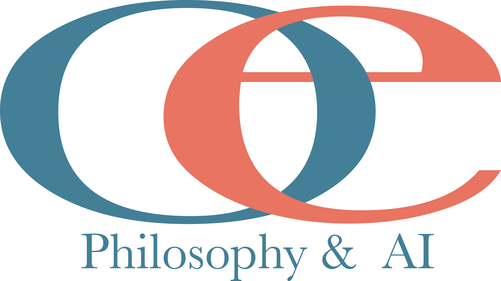

Casey Hart
Ontologist • Philosopher • Programmer
Writing, building, and thinking about ontology, artificial intelligence, philosophy, and knowledge graphs.
Work with me

Ontologist • Philosopher • Programmer
Writing, building, and thinking about ontology, artificial intelligence, philosophy, and knowledge graphs.
Work with me